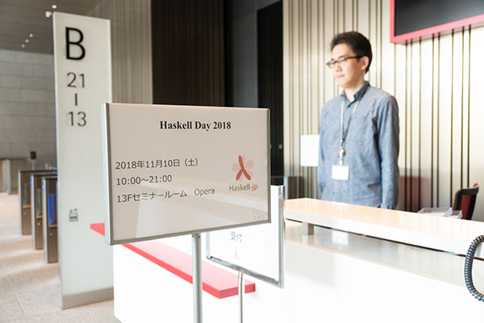
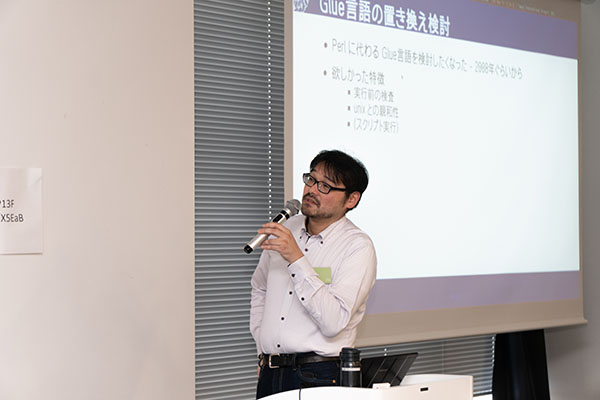

こんにちはkakkun61こと岡本和樹です。
去る11月10日にHaskell Day 2018が開催されましたので、そのイベントレポートをお送りします。
Link to
hereHaskell Day 2018とは

https://haskell-jp.connpass.com/event/92617/
Haskell Dayは2012年2016年と不定期に開催しており今回で3度目となります。
2018年の今回は「Haskellちょっと興味あるからちょっとできるまで」というテーマで開催されました。

Link to
hereセッション
Link to
here「作りながら学ぶHaskell入門」を使ったハンズオン
開発中の対話的チュートリアル「作りながら学ぶHaskell入門」を使って、参加者の皆さんにもくもくと入門していただきました。「作りながら学ぶHaskell入門」では、簡単な課題を解くことで、Haskellの初歩的な使い方を学びつつ、学んだ知識をその場でテストできます。
https://github.com/haskell-jp/makeMistakesToLearnHaskell

Link to
hereHaskellを導入した話とHRRの紹介


Link to
hereServantで実現する高速かつ安全なAPI開発

Link to
here並列並行言語Haskell

Link to
hereDhall: Haskellの新たなキラーアプリ
Link to
hereSemigroupとは？Monoid？環？


Link to
hereHaskellでCLI

Link to
heregloss: 動かして遊んで学ぶHaskell


Link to
hereLisztあるいは永続データ構造を真に永続させる方法


Link to
here懇親会
スポンサーとしてIIJに飲食物の提供をしていただきました。

Link to
hereアンケート
約110名の方が出席し約40名の方が回答してくださいました。
参加できなくなった約40名の方は事前のキャンセルをよろしくお願いします。
Link to
hereHaskellを始めてどれくらい経ちますか？

ここ1年以内に始めた方が全体の21.4％、1年以上5年未満前に始めた方がちょうど半分程度となりました。1年以上5年未満前に始めた方の57%の方は今でもHaskellを使い続けているようです。
5年以上前に始めた方は全体の1/4となりました。
Link to
here読んだことのある日本語のHaskell本は？

項目は下記となります。
- すごい Haskell たのしく学ぼう！
- プログラミング Haskell
- Haskell による並列・並行プログラミング
- 関数プログラミング実践入門 ── 完結で正しいコードを書くために
- 関数プログラミング入門 ── Haskell で学ぶ原理と技法
- Real World Haskell
- 関数プログラミング ── 珠玉のアルゴリズムデザイン
- 簡約！λカ娘
- Haskell ── 教養としての関数型プログラミング
- その他（自由記述）
この項目にはアンケートの途中で追加したものもあるので、結果があまり厳密でないことに注意してください。
その他の選択肢で自由記述では次の票がありました。
- Haskell入門 10票
- ふつうのHaskell 1票
- Haskellによる関数プログラミングの思考法 1票
Link to
here終わりに
参加者の発表者、スタッフのみなさんのおかげで無事開催することができました。ありがとうございました。
今後ともHaskell-jpをよろしくお願いします。